Tema CS2: Funciones de una variable
(Ejercicios resueltos)
1 Definición de funciones
Ejercicio 1.1. Definir, usando el operador :=, la función
f(x) = sen(x)-x
(%i47)
f(x):=sin(x)-x;
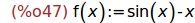
Ejercicio 1.2. Definir, usando lambda, la función g que a un x le asigna
sen(x).
(%i48)
g:lambda([x],sin(x));
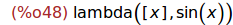
Ejercicio 1.3. Definir, usando define, la función
h(x) = sqrt(1+x^2)-2*x
(%i49)
define(h(x),sqrt(1+x^2)-2*x);
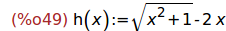
2 Límites y asíntotas
Ejercicio 2.1. Calcular el límite de f(x) cuando x tiende a infinito.
(%i50)
limit(f(x),x,inf);
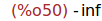
Ejercicio 2.2. Calcular el límite de g(x)/x cuando x tiende a cero.
(%i51)
limit(g(x)/x,x,0);
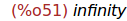
Ejercicio 2.3. Calcular el límite de h(x) cuando x tiende a menos infinito.
(%i52)
limit(h(x),x,minf);
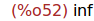
Ejercicio 2.4. Calcular el límite de 1/(1-t^2) cuando t tiende a 1 por la
izquierda.
(%i53)
'limit(1/(1-t^2),t,1,minus)=limit(1/(1-t^2),t,1,minus);
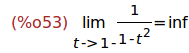
Nota: Cuando una expresión va precedida del operador quote ('), significa
que dicha expresión no se evalúa.
Ejercicio 2.5. Calcular el límite de 1/(1-t^2) cuando t tiende a 1 por la
derecha.
(%i54)
'limit(1/(1-t^2),t,1,plus)=limit(1/(1-t^2),t,1,plus);
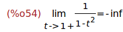
Ejercicio 2.6. Calcular los 2 primeros términos del polinomio de Taylor de
h(x) en un entorno del infinito y, a partir de él, el límite de h(x)
x cuando x tiende a infinito.
(%i55)
taylor(h(x),x,inf,2);
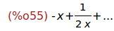
(%i56)
limit(%, x, inf);
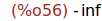
3 Derivación
Ejercicio 3.1. Calcular la derivada de h(x) respecto de x.
(%i57)
'diff(h(x),x)=diff(h(x),x);
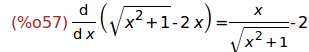
Ejercicio 3.2. Definir, usando define, la función p(x) como la derivada
de h(x) respecto de x.
(%i58)
define(p(x),diff(h(x),x));
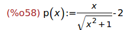
(%i59)
define(p(x),ratsimp(diff(h(x),x)));
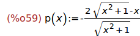
Ejercicio 3.3. Calcular segunda la derivada de la función f respecto de x.
(%i60)
diff(f(x),x,2);
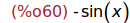
Ejercicio 3.4. Calcular la ecuación reducida de la tangente a la curva
definida por h, en el punto de abcisa x=2.
(%i61)
y=expand(taylor(h(x),x,2,1));
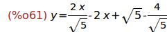
4 Funciones definidas a trozos
Ejercicio 4.1. Definir la función
d(x) = 0, si x < 0
= x^3, si 0 <= x <= 1
= 1, si x > 1
(%i62)
d(x) := if x<0 then 0
elseif x<=1 then x^3
else 1;
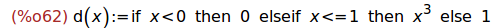
5 Representación gráfica
Ejercicio 5.1. Dibujar la gráfica de d(x) para x entre -2 y 4 e y entre
-1 y 2.
(%i63)
wxplot2d(d(x), [x,-2,4], [y,-1,2]);
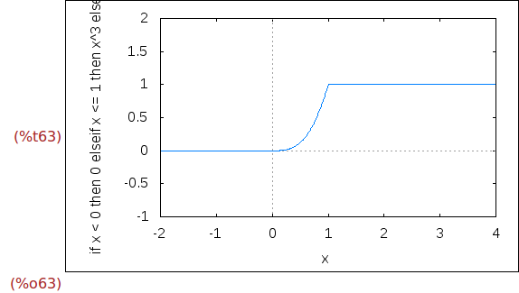
Ejercicio 5.2. Dibujar la gráfica de h(x) para x entre -2 y 4 e y entre
-5 y 1, usando retícula.
(%i64)
wxplot2d(h(x), [x,-2,4], [y,-5,1], [gnuplot_preamble, "set grid "])$
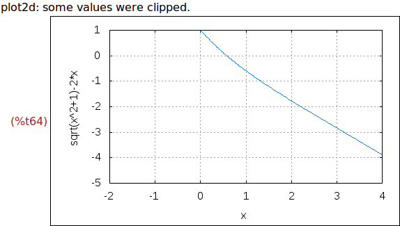
Ejercicio 5.3. Dibujar las gráficas de g(x), x y x-x^3/6 para x entre
pi y pi e y entre -1.5 y 1-5, mostrando los ejes de coordenadas.
(%i65)
wxplot2d( [g(x),x,x-x^3/6] , [x,-%pi,%pi] , [y,-1.5,1.5] ,
[gnuplot_preamble, "set zeroaxis"])$
Ejercicio 5.4. Dibujar las gráficas de g(x), x y x-x^3/6 para x entre
pi y pi e y entre -1.5 y 1-5, mostrando los ejes de coordenadas y
retículas.
(%i66)
wxplot2d( [g(x),x,x-x^3/6] , [x,-%pi,%pi] , [y,-1.5,1.5] ,
[gnuplot_preamble, "set zeroaxis; set grid"])$
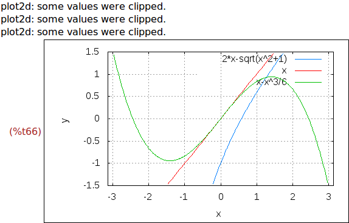